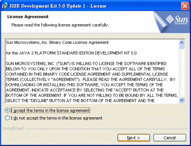
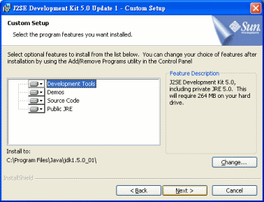
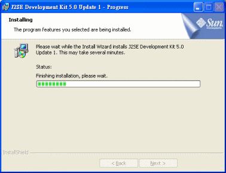
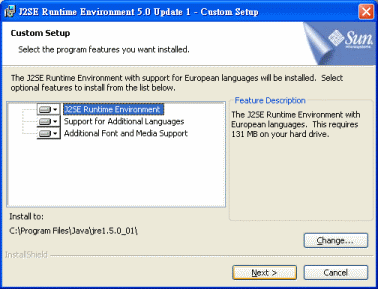
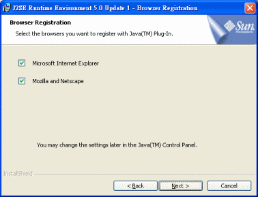
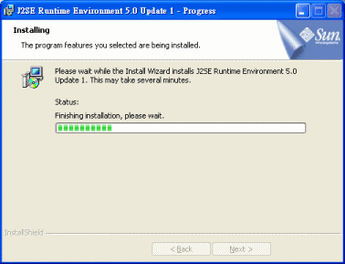
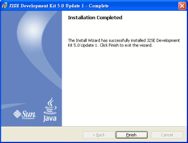

Windows XP 的 JDK 安裝指南
在 Windows XP 作業系統安裝 JDK 是很容易的事情！只要點兩下安裝檔啟動安裝精靈，然後一直按「下一步」，就可以安裝完成。
但如果你想對整個安裝過程有更深入的了解，下面內容可說是為你設計的。
安裝過程
步驟 1
下載了 JDK 5.0 之後，你應該會得到如下的檔案：
請執行這個檔案，展開 JDK 的安裝過程。
[*] jdk-1_5_0_01 是 JDK 1.5.0 Update 1 的意思。Update 1 表示對 1.5.0 的第一次修正，通常很快就又會有 Update 2、Update 3…的版本出現；這時候檔名會預設為 jdk-1_5_0_02 或 jdk-1_5_0_03。
[*] 如果我們的 JDK 是準備做為伺服系統當作程式引擎，建議只要看到有最新的 Update 版本便立即下載使用，讓系統更能避免執行上的錯誤。如果是純粹開發程式軟體，則不用急著下載新的 Update 版本，除非編譯時真的遇到問題。
[*] 當你上 Java Technology 網站，看到 JDK 的版本已經出到 1.5.1 或者 1.5.2 的話，則不管是開發也好或運行也好，都建議趕快下載使用。這種版序代表功能上的增益，越新的版本其功能越優異。
[*] 但是每次一有新的版本就搶著下載使用其實也蠻累的，因此或許你也可以一直使用 JDK 1.5.0，等到 JDK 1.5.3 出現的時候才決定升級。通常 3 表示這是最成熟的版本了，是最值得下載使用的。
步驟 2
安裝過程的第一個步驟，是閱讀許可協議書：

你必須按 I accept the terms in the licenes agreement 表示同意裡面的條款，才能按 Next 鈕繼續下一個安裝步驟。
也就是說，如果你安裝了這套軟體就表示你已經同意協議內容。以後在這套軟體使用上的權益事宜，都必須以這些條款的規定為準則，不得議異。
[*] 就算不懂英文也不能賴皮，只要同意而安裝了軟體，一切糾紛就是照協議書宣讀。
步驟 3
接著是安裝過程的第二個步驟，你可以選擇要安裝的項目以及安裝的磁碟位置：

可以選擇的安裝項目如下：
Development Tools - 開發工具。
Demos - 程式範例。
Source Code - API 的原始程式碼。
Public JRE - 測試用執行環境。
預設的安裝路徑是 [系統磁碟]:\Program Files\Java\jdk1.5.0_1，你可以按 Change 按鈕變更 JDK 的安裝路徑。預設的安裝路徑會隨版序而不同，例如 JDK 1.5.0 Update 3 會使用 jdk1.5.0_03 的資料夾名稱。無論預設的安裝路徑如何，請把它記下來，安裝完 JDK 要進行後續設定時會用到。
建議不要更改任何設定，直接按 Next 進行下一安裝步驟即可。
[*] 這裡所謂的 [系統磁碟] 是指用來安裝 Windows 的硬碟。通常我們的 Windows 都安裝在 C 槽。
[*] 你可能會覺得預設安裝路徑裡面的 jdk1.5.0_01 用了一堆數字很不美觀，所以想更改一下。雖然不美觀，但使用這些版本代號在安裝目錄有一個好處，那就是以後下載新版的 JDK 時：例如 jdk1.6.0，就可以同時安裝兩種版本的 JDK，不用擔心新舊版本安裝目錄的問題。
步驟 4
進入第三個安裝步驟，就開始把 JDK 安裝到電腦裡面。

請等候這個安裝過程的處理時間，大致上在數分鐘以內就可以完成。
步驟 5
當第三個安裝步驟快結束時，會出現新的安裝過程：

這是 JRE 的安裝過程，你可以選擇要安裝的項目以及安裝的磁碟位置。
可以選擇的安裝項目如下：
J2SE Runtime Environment - 爪哇執行環境。
Support for Addtional Languages - 其它語系支援。
Addtional Font and Media Support - 字型與多媒體支援。
JRE 預設的安裝路徑是 [系統磁碟]:\Program Files\Java\jre1.5.0_1，你可以按 Change 按鈕變更安裝路徑。
建議不要更改任何設定，直接按 Next 進行下一安裝步驟即可。
步驟 6
接著 JRE 安裝過程會要求你選擇要讓哪些瀏覽器外掛 Java：

如果瀏覽器外掛 Java，就可以執行 Applet 程式。Applet 是一種專門執行在網頁上的 Java 程式，可讓網頁支援豐富的程式功能。有許多網站的服務系統，就是用 Applet 來開發操作畫面，例如蕃薯藤的股票即時看盤。
請讓你所安裝的瀏覽器都支援 Java 外掛，然後按 Next 鈕進入下一安裝過程。
[*] 根據使用的瀏覽器不同，安裝畫面出現的可勾選項目也不同。圖片顯示的是安裝 IE 瀏覽器與 Firefox 瀏覽器的情形。
步驟 7
開始正式進行 JRE 的安裝，請等候這個安裝過程的處理時間：

步驟 8
當 JRE 的安裝過程完成，JDK 的安裝過程也告一段落。

請按 Finish 鈕結束安裝，你的電腦已經成功安裝 Java 開發套件與 Java 執行環境。